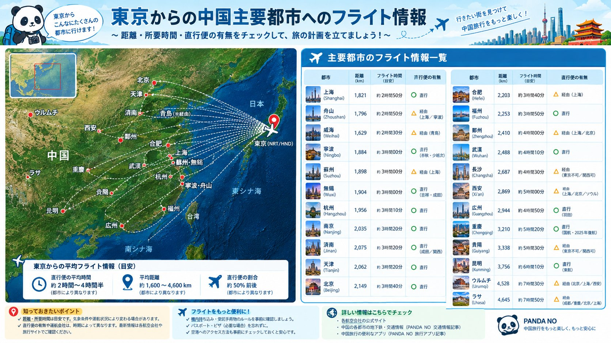

福建省の省都・福州は、古くから海上交易で栄えた港町であり、実は沖縄(琉球王国)と深い歴史的つながりを持つ街です。千年前の町割りがそのまま残るエリアや、清朝末期の近代化を支えた造船拠点まで、まとめて解説します。
唐末に形成された「三坊七巷」、千年変わらぬ町割り
福州の中心部に残る「三坊七巷」は、総面積約45ヘクタールにおよぶ歴史的な町並みです。「三坊」は衣錦坊・文儒坊・光禄坊、「七巷」は楊橋巷・郎官巷・塔巷・黄巷・安民巷・宮巷・吉庇巷を指し、その基本的な町割りは唐末にはすでに形成されていたとされています。明清の時代に最盛期を迎え、現在も200を超える古い建築が残るこのエリアは、晋唐の時代から千年以上にわたり、有力商人や名士が集まる街として栄え続けました。アヘン戦争時の官僚・林則徐、思想家・厳復、作家・冰心など、多くの著名人がこの町並みから輩出されています。
清朝末期、中国最大級の造船拠点となった「船政文化」
福州郊外の馬尾地区は、清朝末期の近代化事業「洋務運動」を象徴する場所です。ここに置かれた福建船政局は、中国近代初の海防関連機構であり、近代初の新式造船所でもありました。当時、極東地域で最大規模を誇った造船産業拠点とされ、2024年12月には、三坊七巷・海上シルクロード福州史跡とあわせて、中国の世界文化遺産候補リストにも名を連ねています。
14世紀から続く琉球王国との交流
福州は、14世紀から19世紀後半にかけて、琉球(現在の沖縄)と中国を結ぶ交流拠点として栄えました。福州市内には、琉球からの使節や商人が滞在した「琉球館」や、当時の琉球人の墓地が今も残っており、両地域の緊密な交流の歴史を物語っています。この歴史的つながりを背景に、1981年5月20日、那覇市で福州市長一行を迎えての友好都市調印式が行われました。また、長崎市とも友好都市関係にあり、2020年時点で提携40年を迎えています。福州は、沖縄・長崎という日本の2つの都市とそれぞれ独自の歴史的絆を持つ、珍しい街だといえます。
市内の見どころ:鼓山・于山、そして「温泉の都」
福州観光でまず押さえておきたいスポットを紹介します。
- 鼓山:福州市街の東に位置する標高969mの山。市民の定番ハイキングコースになっており、山頂からは市街地を一望できます
- 于山:市中心部にある標高58.6mの小さな山。白塔をはじめとする史跡が集まり、気軽に立ち寄れる観光スポットです
- 温泉:福州は西晋時代(3〜4世紀)から1700年以上の歴史を持つ温泉地で、「中国温泉之都」とも呼ばれています。市中心部の繁華街のすぐそばで温泉に入れるのは、中国の省都クラスの都市としては珍しい特徴です
足を延ばせば:平潭島の「青の涙」と世界遺産・泉州
福州から日帰り〜1泊圏内に、あわせて訪れたいスポットがあります。
- 平潭島:台湾にもっとも近い中国本土の島の一つ。福厦高鉄で福州から約34分とアクセスがよく、4〜8月ごろの夜には、夜光虫の発光現象「青の涙(藍眼淚)」が海岸を青白く照らす様子が見られることがあります(発生は気象条件に左右されるため、必ず見られるわけではありません)
- 泉州:2021年、「泉州:宋元中国の世界海洋商貿中心」として世界遺産に登録された港町。マルコ・ポーロも訪れたとされる宋元時代の国際貿易港の記憶を今に伝えています。余談ですが、この世界遺産登録が決定した第44回世界遺産委員会は、ほかならぬ福州で開催されていました
福州グルメ:仏跳牆と魚丸
福建料理(閩菜)の中心地・福州には、ほかの都市では味わえない名物料理があります。
- 仏跳牆(ぶっちょうしょう):フカヒレ・干し鮑・海参など高級食材を壺でじっくり煮込んだ福州を代表する高級料理。清代、老舗料亭「聚春園」の料理人・鄭春発が考案したとされ、あまりの香りの良さに「僧侶も壁を飛び越えて食べに来る」と詠まれたことが名前の由来といわれています
- 福州魚丸:すり身の中に豚肉餡を包んだ、福州発祥とされる魚のつみれ。一般的な魚肉団子とは違い、噛むと中から肉汁があふれるのが特徴です
- 光餅:中央に穴の空いた素朴な焼き餅。明代の武将・戚継光が倭寇討伐で福建に入った際、行軍食として持ち運びやすいよう考案させたのが起源とされています
気候とベストシーズン
福州は亜熱帯性気候で、夏は高温多湿(7〜8月は35℃を超える日も珍しくありません)、台風の影響を受けやすい時期でもあります。冬は比較的温暖です。観光には、気候が安定する春(3〜5月)や秋(10〜11月)が適しています。
東京からの行き方

東京から福州長楽国際空港へは、直行便で約4時間5分とされています。運航する航空会社や便数は時期によって変わることがあるため、予約前に最新の運航状況を確認することをおすすめします。
まとめ
福州は、千年変わらぬ町割りが残る「三坊七巷」と、沖縄・長崎とのつながりという、日本人にとっても親しみやすい歴史を持つ街です。1700年の歴史を持つ温泉、仏跳牆をはじめとする閩菜、そして平潭島・泉州といった周辺スポットまで、街そのものの規模以上に楽しめる要素がそろっています。
史跡の公開情報や交通スケジュールは変更されることがあります。訪問前に最新の公式情報もあわせてご確認ください。
この記事の内容に古い情報や誤りを見つけた場合、あるいはご感想・ご質問がありましたら、お問い合わせまでお気軽にご連絡ください。